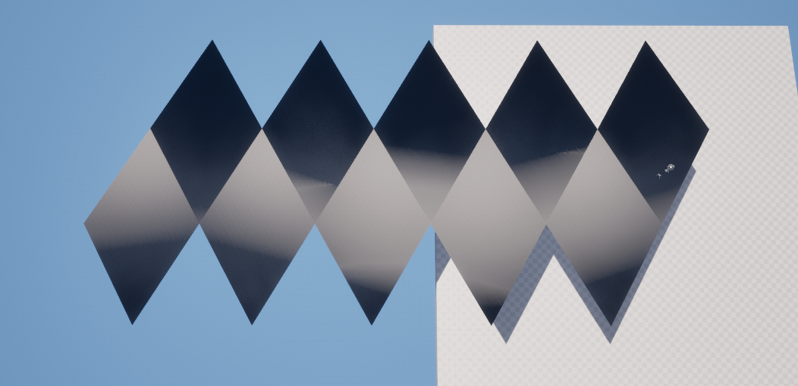

Procedural Planet Generation in Unreal
Posted by Dobbenberg, Wouter on 2024-08-08
When I started working on procedural planet generation in Unreal Engine, I aimed to create a planet made of hexagonal tiles. This was my first project in Unreal, and I used an icosahedron as the base shape. By subdividing the icosahedron, I transformed it into a sphere covered with hexagons.
However, due to the geometry of the icosahedron, 12 pentagons appeared at the poles. This is a known issue when converting an icosahedron to a hexagon grid, but it didn’t affect the main goal of my project. Here’s a look at the planet I created:
However, due to the geometry of the icosahedron, 12 pentagons appeared at the poles. This is a known issue when converting an icosahedron to a hexagon grid, but it didn’t affect the main goal of my project. Here’s a look at the planet I created:
In addition to the planet's structure, I experimented with custom skybox projections and Unreal’s atmosphere component. These experiments produced a visually interesting planet, but several issues soon became apparent.
Performance Issues
The biggest problem I faced was related to performance. I made each hexagon tile its own actor and procedural mesh, thinking this would allow for easy swapping of tiles with pre-made ones. However, this decision led to a significant performance hit.Each tile being its own actor meant that Unreal Engine had to handle each one individually during rendering. With thousands of tiles making up the planet, this resulted in a large number of draw calls, which severely impacted performance. The game struggled to run smoothly, making this approach impractical for large-scale planet generation.
Realizing this, I knew I needed to rethink my approach to achieve better performance and scalability.
Posted by Dobbenberg, Wouter on 2024-05-29
Hello everyone,
and welcome to the second update on my game development journey using Unreal Engine and C++. This post marks a significant shift in my approach as I decided to refactor my old code entirely. The limitations I encountered with my initial hexagon tile-based approach, including problematic mesh data storage, poor UV mapping, and high draw calls leading to performance issues, prompted me to rethink my strategy. Although performance optimizations were possible, I opted to explore a new method, moving away from individual tile-based meshes.
and welcome to the second update on my game development journey using Unreal Engine and C++. This post marks a significant shift in my approach as I decided to refactor my old code entirely. The limitations I encountered with my initial hexagon tile-based approach, including problematic mesh data storage, poor UV mapping, and high draw calls leading to performance issues, prompted me to rethink my strategy. Although performance optimizations were possible, I opted to explore a new method, moving away from individual tile-based meshes.
Moving to Large Squared Tiles
Instead of the previous tile-based approach, I decided to construct the planet using large squared tiles. This change simplifies future optimizations and Level of Detail (LOD) implementations. The concept of a cube sphere, where a sphere is represented with square tiles, served as a starting point. Additionally, I explored modifying an icosahedron by merging two triangles into a single quad. Implementing both solutions in parallel seemed prudent, allowing for comparative analysis. I began by creating flat projections of the terrain for both the cube sphere and modified icosahedron, which you can see below for comparison.

Transitioning to 3D
With the flat projections ready, the next step was positioning these tiles into their 3D configurations for both the cube sphere and icosahedron. Keeping the shapes flat initially, I adapted my interpolation code to accommodate the sharp edges in the icosahedron quads. The transition results are shown below, illustrating the shift from 2D projections to 3D tiles.Normalizing and Finalizing the Sphere
The final step involved normalizing the vertices to form a spherical shape. By multiplying the normalized vertices by the desired radius, I achieved a large procedural sphere. This method ensures a smooth and continuous surface, essential for realistic planet generation.Technical Details: UVs, Triangles, and Normals
Regarding UV mapping, triangle creation, and normal calculation, these steps were integrated into the terrain generation process. UVs and triangles were computed during the interpolation stage, ensuring accurate texture mapping. Normal vectors were calculated at the final stage, specifically for the 3D spherical shape. It's worth noting that this sequential approach resulted in some lighting artifacts during the intermediate stages, as the normals were only correct in the final 3D configuration.Posted by Dobbenberg, Wouter on 2024-08-08
With the initial sphere shape complete, the next step was to texture the planet. I wanted to find an efficient way to apply textures to the complex spherical surface, which led me to explore different techniques.
Tri-Planar Mapping
One method I discovered was tri-planar mapping, a technique that projects textures onto a 3D model from three orthogonal planes (usually X, Y, and Z axes). Instead of relying on traditional UV mapping, which can be complex for irregular shapes like a sphere, tri-planar mapping projects textures from each axis and blends them based on the surface's normal direction. This method is particularly useful for objects that lack a proper UV map or for models with difficult geometry. Here's a visual representation:
This technique allowed me to apply textures without worrying about UV mapping. Additionally, this method provided the flexibility to switch to square-based tiling if needed.
Problems with Tri-Planar Mapping
However, tri-planar mapping in Unreal Engine has a significant drawback. Due to how textures are sampled and remapped in 3D space, it requires multiple texture samplers. Unreal Engine limits texture samplers to 12 per material, which can be quickly exceeded when using tri-planar mapping.Each texture in tri-planar mapping is sampled three times—once for each axis. This means that a single texture, when mapped using tri-planar techniques, uses four texture samplers: one for each axis and one for the original texture. This setup restricts us to using only three textures (base color, normal map, and either a specular or roughness map) within a single material before hitting the sampler limit.
A Solution: Dithering
The main reason for the high sampler count is the need to blend the textures smoothly across the different planes. A YouTuber named "Alex" proposed an alternative solution using dithering instead of linear interpolation to transition between textures.Dithering is a technique where small patterns of pixels are used to create the illusion of gradient transitions. In the context of tri-planar mapping, dithering can be used to mix the textures from different planes without requiring the additional texture samplers needed for smooth transitions. By implementing Alex's solution, I was able to achieve seamless transitions between textures with fewer texture samplers, allowing more textures to be used in a single material.
This approach provided a practical solution to the limitations of tri-planar mapping, helping me maintain visual quality while staying within Unreal Engine's material constraints.
Posted by Dobbenberg, Wouter on 2024-08-08
To add height and more realistic terrain to my procedural planet, I needed a way to generate a consistent 3D height map across all axes. For this, I chose to use 3D simplex noise.
3D Simplex Noise
Simplex noise is a more efficient and higher-dimensional alternative to the traditional Perlin noise algorithm. Unlike Perlin noise, which is typically 2D or 3D, simplex noise can operate in any number of dimensions. It’s open-source and well-suited for generating natural-looking terrain, especially when you need a noise function that works smoothly in 3D space.The implementation of 3D simplex noise went smoothly and allowed me to create the height variations needed for the planet's surface. By feeding the noise values into the vertices of the planet mesh, I was able to create varying elevations that mimicked natural terrain features.
Handling Seams Between Terrain Tiles
However, this approach introduced a common issue: visible seams between adjacent terrain tiles. These seams occur because each tile calculates its vertex normals independently, leading to mismatches at the borders where tiles meet. Normals are crucial for lighting calculations, and when they don’t align correctly, the result is a noticeable seam.To fix this, I needed to make each terrain tile aware of its neighboring tiles. By using vertex math and a neighbor index, I adjusted the normals at the edges of each tile so that they aligned correctly with adjacent tiles. This adjustment ensured that the lighting was smooth across tile borders, eliminating the seams and creating a seamless terrain surface. Here's the final result:
This approach not only improved the visual quality of the planet's terrain but also ensured that the height map remained consistent and smooth across the entire planet.